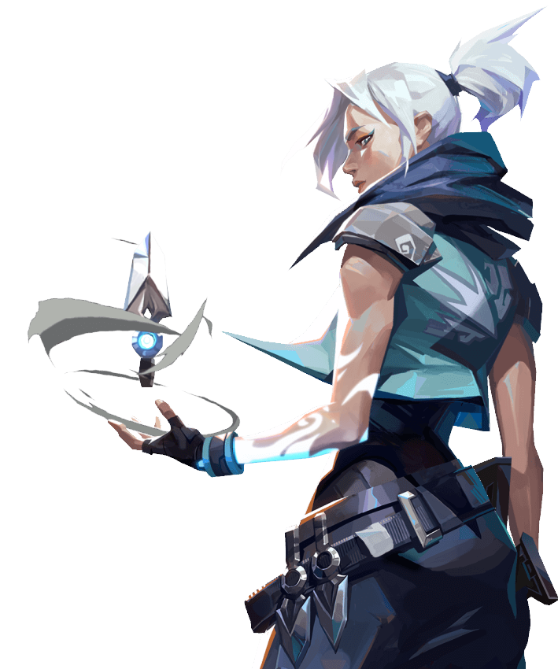

VALORANT
Thách Thức Mọi Giới Hạn
Mang phong cách và trải nghiệm cá nhân tới đấu trường cạnh tranh toàn cầu. Sử dụng kỹ năng đấu súng cùng với lối tư duy chiến thuật sắc bén với hai phe tấn công và phòng thủ,
thành bại được định đoạt chỉ trong 13 vòng đấu. Với chỉ 1 mạng mỗi vòng đấu, sự nhanh nhẹn và quyết đoán sẽ là yếu tố giúp bạn sống sót.
Trải nghiệm VALORANT trong các chế độ chơi: Đấu Xếp Hạng, Đấu Thường, Sinh Tử và Spike Thần Tốc đầy mới mẻ